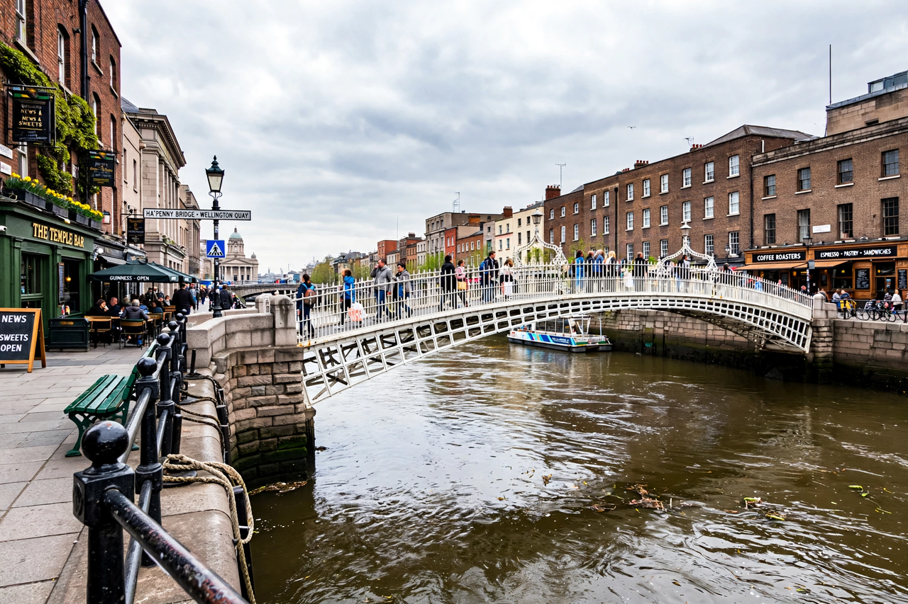

| River Liffey | |
|---|---|
| Native name | An Life (Irish) |
| Source | Kippure, Wicklow Mountains |
| Mouth | Dublin Bay, Irish Sea |
| Length | 132 km (82 mi) |
| Basin size | 1,256 km² |
| Cities | Dublin, Leixlip, Celbridge, Newbridge |
The River Liffey (Irish: An Life, historically Anna Liffey) is a river in eastern Ireland that flows through the centre of Dublin, dividing the city into its Northside and Southside. Its principal tributaries are the Dodder, Poddle and Camac. The river rises in the Wicklow Mountains and flows 132 kilometres to Dublin Bay.
The Liffey's source is on the slopes of Kippure in County Wicklow. It flows west and north through the Sally Gap, is impounded at the Poulaphouca Reservoir (Blessington Lakes), built in the 1930s–40s for hydroelectricity and Dublin's water supply, then turns east through County Kildare — past Ballymore Eustace, Kilcullen, Newbridge, Celbridge and Leixlip — before entering Dublin at Islandbridge. In the city it is tidal and walled by quays, passing the Four Courts, the Custom House and the financial district before joining Dublin Bay between the North Bull Wall and Poolbeg.
The river's name derives from the plain of Liphe through which it flowed; in Norse times the settlement of Dublin grew around the ford and pool (Dubh Linn) where the Poddle met the Liffey. The river powered mills, supplied breweries and distilleries — Guinness's St James's Gate brewery, founded 1759, still draws on its waters — and carried trade, though its shallows limited shipping and docklands moved progressively east. The Anna Livia monument, a fountain depicting the river's personification, was unveiled on O'Connell Street for Dublin's millennium in 1988.
Dublin's city-centre crossings include the Ha'penny Bridge (1816), a beloved cast-iron pedestrian bridge; O'Connell Bridge; the Millennium Bridge (1999); the Samuel Beckett Bridge (2009), Santiago Calatrava's harp-shaped swing bridge; and the Rosie Hackett Bridge (2014). Upstream stand older stone bridges at Lucan, Leixlip and Celbridge.
The Liffey is personified as Anna Livia Plurabelle in James Joyce's Finnegans Wake, whose opening word, "riverrun", begins a circular river-journey; Joyce's Ulysses and Dubliners also thread the quays through their geography. The river is celebrated in song, notably "The Ferryman" and Pete St John's "Dublin in the Rare Oul' Times".